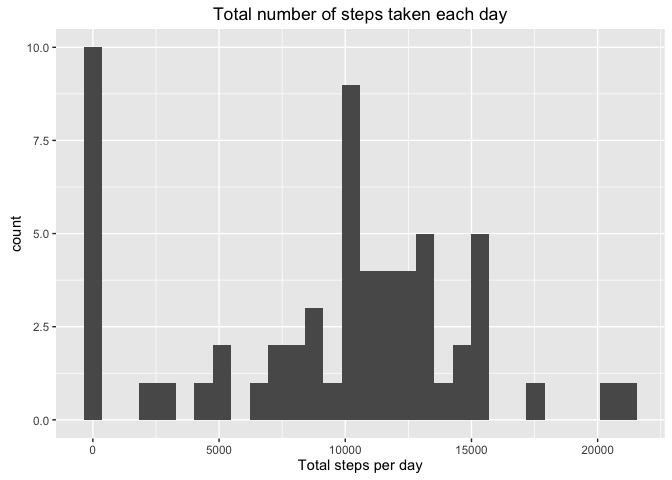
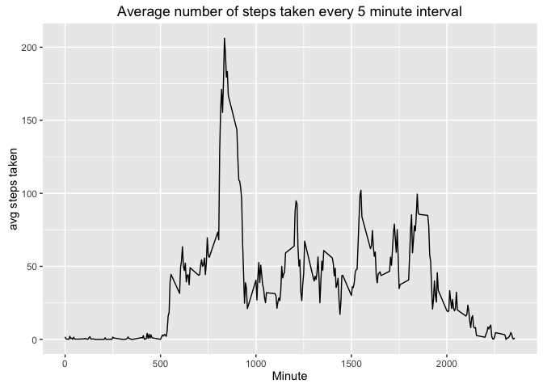
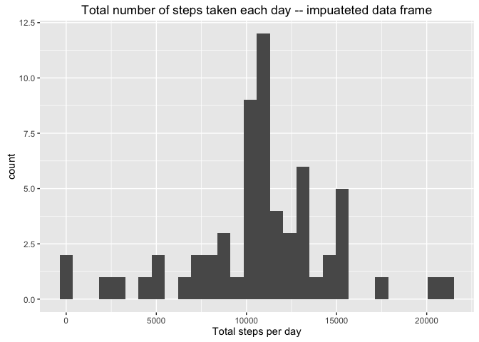
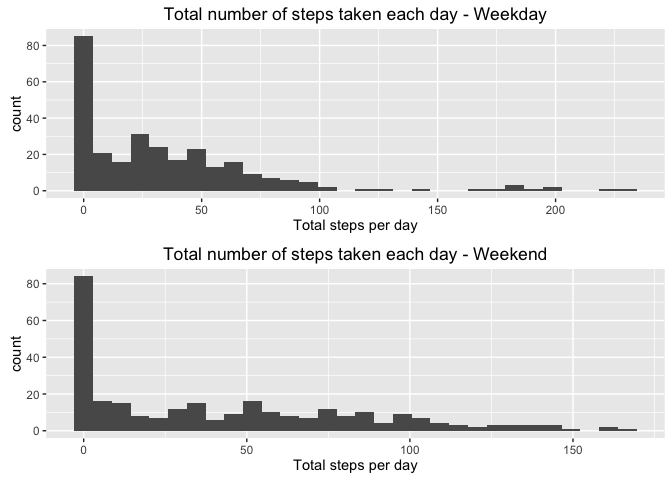

library(ggplot2)
library(lubridate)
##
## Attaching package: 'lubridate'
## The following object is masked from 'package:base':
##
## date
library(scales)
library(car)
library(gridExtra)
fileurl <- "https://d396qusza40orc.cloudfront.net/repdata%2Fdata%2Factivity.zip"
download.file(fileurl,destfile="factivity.zip",method="curl")
unzip("factivity.zip")
code <- read.csv("activity.csv",colClasses = c("numeric","POSIXct","numeric"))
daily_steps <- aggregate(code$steps,by = list(day=code$date),FUN=sum, na.rm=TRUE)
m<-ggplot(daily_steps, aes(x))
m + geom_histogram() + xlab("Total steps per day") + ggtitle("Total number of steps taken each day")
## `stat_bin()` using `bins = 30`. Pick better value with `binwidth`.
<!-- -->
mean <- mean(daily_steps$x)
mean
## [1] 9354.23
median <- median(daily_steps$x)
median
## [1] 10395
interval_avg <- aggregate(x=code$steps,by=list(code$interval),FUN = mean, na.rm=TRUE)
ggplot(data=interval_avg, aes(x=Group.1, y=x))+ geom_line() + ylab("avg steps taken") + xlab("Minute") + ggtitle("Average number of steps taken every 5 minute interval")
<!-- -->
interval_avg[which(interval_avg$x== max(interval_avg$x)),"Group.1"]
## [1] 835
number_of_na <- length(which(is.na(code$steps)))
code2 <- code
impute_vals<-tapply(code$steps,code$interval,FUN=mean,na.rm=TRUE)
vals<-names(impute_vals)
n<-length(vals)
for(i in 1:n){
code2$steps[which(is.na(code$steps) & code$interval==vals[i])]<- round(impute_vals[i],digits=0)
}
daily_steps_imp <- aggregate(code2$steps,by = list(day=code$date),FUN=sum, na.rm=TRUE)
m<-ggplot(daily_steps_imp, aes(x))
m + geom_histogram() + xlab("Total steps per day") + ggtitle("Total number of steps taken each day -- impuateted data frame")
## `stat_bin()` using `bins = 30`. Pick better value with `binwidth`.
<!-- -->
mean2 <- mean(daily_steps_imp$x)
mean2
## [1] 10765.64
median2 <- median(daily_steps_imp$x)
median2
## [1] 10762
var_tax_mean<-(mean2-mean)/mean
percent(var_tax_mean)
## [1] "15.1%"
var_tax_median<-(median2-median)/median
percent(var_tax_median)
## [1] "3.53%"
Sys.setlocale("LC_TIME", "en_US.UTF-8")
## [1] "en_US.UTF-8"
code3 <- code2
code3$day<-weekdays(code2$date)
code3$day<-recode(code3$day,"c('Monday','Tuesday','Wednesday','Thursday','Friday')='weekday';c('Saturday','Sunday')='weekend'",as.factor.result = TRUE,levels=c("weekday","weekend"))
code3$interval<-factor(code3$interval)
steps_wday<-aggregate(code3$step,list(interval=code3$interval,day=code3$day),mean,na.rm=TRUE)
wd<-ggplot(steps_wday[which(steps_wday$day=='weekday'),], aes(x))
wd<-wd + geom_histogram() + xlab("Total steps per day") + ggtitle("Total number of steps taken each day - Weekday")
we<-ggplot(steps_wday[which(steps_wday$day=='weekend'),], aes(x))
we<-we + geom_histogram() + xlab("Total steps per day") + ggtitle("Total number of steps taken each day - Weekend")
grid.arrange(wd,we,ncol=1)
## `stat_bin()` using `bins = 30`. Pick better value with `binwidth`.
## `stat_bin()` using `bins = 30`. Pick better value with `binwidth`.
<!-- -->